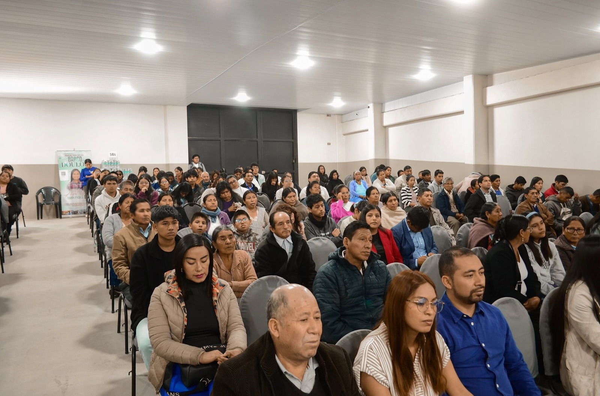

MIPAM · Sucre, Bolivia
Ven tal como eres, encuentra un lugar para creer
Una familia que celebra, ora y sirve junta cada semana en Sucre. Te esperamos este domingo.
Nosotros
Una iglesia que camina junto a su comunidad
El Ministerio Internacional Primera Asamblea es una congregación en Sucre, Bolivia. Cada semana abrimos nuestras puertas a familias que buscan crecer en fe, comunidad y propósito.
Creemos en la visión celular, el modelo de los 12, el discipulado de Jesús: con espacio para los más pequeños, prejuveniles y para todos los jóvenes, con cultos dominicales y un culto especial en quechua para honrar la identidad de nuestra gente.
Horarios
Te esperamos esta semana
Cultos de Celebración · Domingo
Reuniones semanales
Ministerios por edades
Nuestras Redes · Sábados
Cada sábado, niños, prejuveniles y jóvenes tienen su propio espacio para encontrarse con Dios y entre ellos.
Red MIPAMKIDS
Niños
Sábado · 14:00Red KINSARMY
Prejuveniles
Sábado · 16:00Red de Jóvenes
Jóvenes
Sábado · 18:00
Comunidad
Más que un servicio, una familia
Venimos de distintos barrios y caminos, pero cada semana nos sentamos juntos para celebrar, escuchar la Palabra y apoyarnos unos a otros. Si buscas un lugar donde ser conocido, este es tu lugar.
Quiero visitarlosUbicación
Encuéntranos en Sucre
Contacto
Escríbenos, te esperamos
¿Tienes preguntas sobre algún ministerio o quieres que oremos por ti? Contáctanos por WhatsApp o síguenos en Facebook.
MIPAM Sucre
Calle Demetrio Canelas # 50
Sucre, Bolivia
+591 67600229 (WhatsApp)
Apóstoles Ramiro Mamani & Patricia Mariño